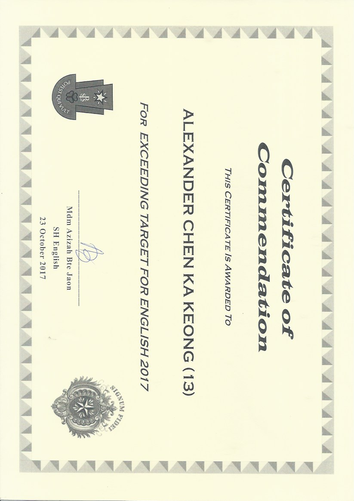
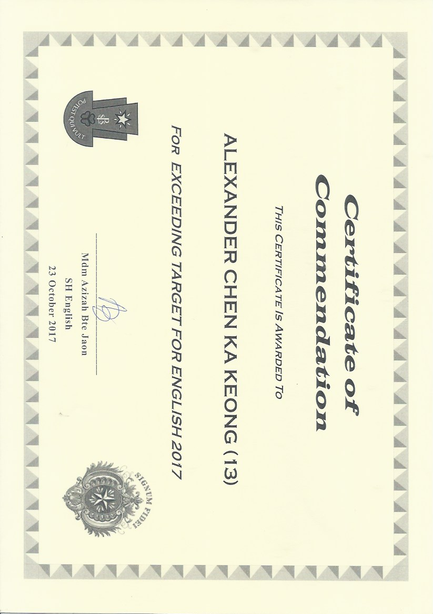

Hello World I am
Alex Chen
St. Patrick's School StudentAbout
My Education
2011-2016
St Joseph Instituition Junior2017-2020
St Patrick's schoolGoals
I aim to be part of the game desgin or media desgin indusrty in the future.- Aiming to apply for a DGDD/DIM(Diploma in game design and developement/ DIploma in immersive media).
- Aiming to achieve an aggregiate of 15 point or lower for GCE O'level examination(L1R4).
My hobbies/interest
I enjoy gaming, sports, magic and music.- I enjoy playing games like Valorant, OSU! and Super Smash Brothers Ultimate. I play games frequently by myself (or in a team) as stress releiver or even as a way to help me better communicate with others in game/IRL. Thorugh games I not only better understand how people work better as a group but how a simple contribution can affect the entire group morale or even the attitude towards say a common goal.
- Sports have played an important role in my life as it helped me to shape and be unique in the games I play or the way I communicate with my peers. Such as squash, football and volleyball have taught me valuable values that people should have. By implementing it in my studies, I really feel as though I have persevered through my years in Secondary school as I was able to dilignetly progress from being in the Normal Academic stream to the express then Double Science class.
- Although magic is mostly seen as a vice or something that is very misleading. However to me magic is as though we discover something new because in reality most of the fundamentals of magic is actually built from maths. So with that in mind I took it as new front to battle and soon I was actually able to conquer it and use it to my advantage to capture the minds of my audience. This really helped wiuth not only my attention but also my ability to absorb information quicker.
- Music has helped to shape the way I looked at certain things, although I did not study music theory, I was able to pick up the drums and did well in it before I had to stop and focus on my studies.(I stopped at grade 4). By learning the Drums, I feel as though it really taught the basics of how hard work really pays off form putting in countless hours into doing basic skill training to learning songs to perform or play for simple pleasure too.
Background
2 years ago I decided to learn some IT. As I was fortunate enough to have supportive parents who were able to find a suitable course for me to learn coding in 2018. Due to that 1 exposure I had with coding it fueled my burning passion to learn how to code. Since I was an avid gamer back then I learnt that some games were coded with the language C# and tried to make a simple game with it. Due to my school offering a subject in computing, I decided to apply for it and got accepted. Since then in school I have placed my utmost effort into the subject in school. And I have also learned new skills in the subject such as SQlite3 and Django as well as went for an AEM course that helped me to better understand the cybersecurity side of computing, all in the span of 1 year.
contact
Email: alexpolystuff@gmail.com Phone: +65 9828 5813- Now - learning javascript on grasshopper, made this website, doing course to better my understanding of C# in CodeAcademy
- Early 2020 - touched abit of Excel, HTML, C#, audited course on EdX, completetd an intro to C# in Repl.it, Made a Sudoku Solver and an auto pathfinder on python
- Late 2019 - won 42nd SAFRA Men’s novice plate, won Tnglin under 17 plate, went for DSTA IoTcamp at Victoria Secondary
- Mid 2019 - took part in 3rd National junior circuit squash, leanred Django and SQlite, went for AEM about cybersecurity
- Early 2019- started computing as a subject, represented school in B-Div squash
- Late 2018 - accpeted into the double science and computing class, took part in 3rd leg National Squash junior circuit
- Mid 2018 - represented school in C-div squash, took part in a course to learn python at saturday kids
- Early 2018 - started learning in the express stream
- Late 2017 - took part in SCGS invitationals and placed 3rd, Promoted to express stream from normal academic stream, selected to become part of the peer leader board(one of the student leader borad)
- Mid 2017 - took part in 2nd leg National Junior Circuit squash, took SBB Maths and Science for express
- Early 2017 - joined squash cca
- Early 2016 - took part in SYF
- Mid 2015 - travelled to Gold Coast Australia with the school band for a week
- Early 2014 - joined the school band, selected to be part of school prefect board
- Mid 2013 - picked up bowling
- Early 2013 - started learning Drums
- Early2011 - started taekwondo, football, chess and squash
Timeline of events in my life
My certificates throughout the years
Academic Achievement


 

Sports


Music


IT


Others